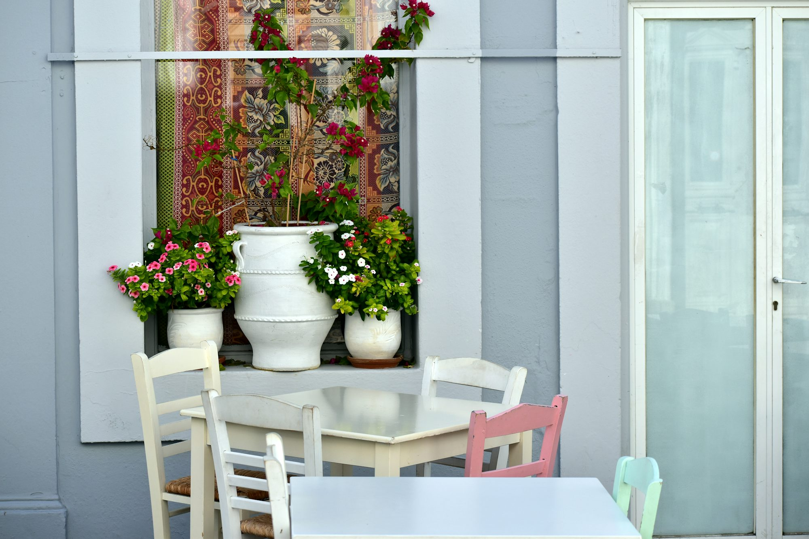

Café Inspirations: The Art of Creating Unique Experiences
Coffee shops are the heart and soul of café culture, serving as essential gathering spots for individuals and groups alike. Typically focused on coffee, these establishments offer a diverse range of beverages, including rich espressos, creamy lattes, and refreshing cold brews. The warm, inviting atmosphere of a coffee shop is often complemented by comfortable seating and the enticing aroma of freshly brewed coffee, making it an ideal place for conversations, study sessions, or simply enjoying a moment of peace.
Many coffee shops also enhance their menus with delicious pastries, sandwiches, and light snacks, allowing patrons to indulge in a full café experience. This combination of coffee and food often leads to spontaneous conversations between customers, creating an environment where friendships can blossom over shared meals. With the rise of artisanal coffee, many shops now take pride in sourcing high-quality beans and employing expert brewing techniques, providing not just a drink but an educational experience for coffee lovers.
Moving beyond the realm of coffee, bakery cafés provide a sensory delight for patrons with their focus on freshly baked goods. The moment one enters a bakery café, they are often greeted by the irresistible scent of bread, pastries, and cakes. These cafés specialize in creating delightful sweet and savory treats that pair perfectly with coffee or tea, making them popular destinations for breakfast, brunch, or afternoon tea.
The relaxed and cozy ambiance of bakery cafés encourages patrons to linger, making it an ideal spot for leisurely conversations or quiet reflection. Many bakery cafés also offer baking classes or workshops, allowing patrons to engage in the culinary arts and connect with others who share their passion. By using locally sourced ingredients, these cafés support regional farmers while fostering a sense of community around food.
In today’s digital age, internet cafés have emerged as unique spaces where technology meets the café experience. These establishments provide patrons with access to computers and high-speed internet, catering to students, freelancers, and anyone in need of a productive environment. The atmosphere in an internet café often balances productivity and relaxation, allowing guests to focus on their tasks while enjoying a refreshing beverage.
Internet cafés also create opportunities for social interaction, as patrons often engage in conversations about technology, gaming, or shared interests. Many of these cafés organize gaming tournaments or coding workshops, fostering a sense of community among those who frequent them. By bridging the gap between work and play, internet cafés become lively hubs of creativity and collaboration.
For those who cherish the written word, book cafés provide a haven for literature lovers. These cozy spaces often feature bookshelves filled with a variety of genres, inviting patrons to curl up with a good book while sipping their favorite drink. The tranquil atmosphere encourages deep contemplation and conversation among fellow readers, making these cafés a perfect refuge for bookworms.
Book cafés frequently host events such as author readings, poetry nights, and book clubs, fostering a sense of community among patrons. These gatherings create opportunities for individuals to share their thoughts on literature, exchange recommendations, and form friendships rooted in a shared passion for reading. The blend of coffee and literature transforms book cafés into cultural hubs, where creativity and intellectual discussions thrive.
Art cafés take the café experience to another level by showcasing local artists and their works. These vibrant spaces often feature rotating exhibits of paintings, sculptures, and other forms of artistic expression, creating a visually stimulating atmosphere. Patrons can enjoy their food and drinks while surrounded by creativity, making every visit an inspiring experience.
In addition to displaying art, many art cafés host workshops and classes, encouraging patrons to participate in the creative process. This sense of collaboration fosters connections among artists, art lovers, and casual visitors, turning art cafés into dynamic spaces that celebrate creativity in all its forms. The engaging atmosphere attracts a diverse clientele, enriching the café experience through shared artistic endeavors.
For pet lovers, pet-friendly cafés offer a delightful experience that combines the joy of animals with the café culture. These establishments welcome pets, allowing customers to enjoy their beverages and light meals in the company of their furry friends. Some pet cafés even have resident animals, creating an inviting environment where patrons can bond over their love for pets.
The appeal of pet-friendly cafés lies in their ability to create a joyful atmosphere where socializing and animal companionship coexist. Many of these cafés host events such as adoption days or pet-themed gatherings, further engaging with the community and promoting responsible pet ownership. This inclusive environment not only attracts pet owners but also fosters connections among animal lovers, creating a sense of belonging that enhances the café experience.
As health consciousness continues to rise, organic and health-focused cafés have gained popularity, emphasizing fresh, locally sourced ingredients. These cafés offer a variety of healthy options, including salads, smoothies, and vegan or gluten-free items, catering to health-conscious patrons. The emphasis on organic produce not only supports sustainable farming practices but also aligns with the growing demand for nutritious meals.
The atmosphere in organic cafés is typically calming and inviting, encouraging guests to enjoy their meals in a serene environment. Many of these establishments prioritize sustainability by using eco-friendly packaging and minimizing waste. This commitment to health and the environment resonates with patrons, fostering a loyal customer base that values mindful eating and supports local communities.
Theme cafés add an exciting dimension to café culture by offering unique concepts that transport patrons to different worlds. From retro-themed cafés that evoke nostalgia to board game cafés that encourage friendly competition, these establishments provide unforgettable experiences. Seasonal-themed cafés, such as those celebrating holidays, further enhance the café experience with festive decor and special menus.
The playful atmosphere in theme cafés makes them ideal spots for gatherings, celebrations, or a fun day out. Patrons can immerse themselves in the chosen theme, whether it's enjoying whimsical decor or participating in themed events. This immersive experience not only entertains but also creates lasting memories, ensuring guests return for more adventures.
Community cafés play a vital role in fostering social interaction and engagement within local neighborhoods. These cafés often serve as gathering spots, hosting events, workshops, and fundraisers that bring people together. By prioritizing community involvement, these cafés create welcoming atmospheres where patrons feel connected and valued.
The menu in community cafés typically features locally sourced ingredients, supporting regional producers and promoting a sense of pride in local culture. This focus on community not only enhances the café experience but also strengthens relationships among patrons, creating a supportive environment for networking and collaboration.
For true coffee connoisseurs, gourmet and specialty cafés offer an unparalleled experience. These establishments focus on high-quality coffee beans, unique brewing methods, and a refined coffee-drinking experience. Patrons can explore various coffee profiles, learning about different origins, tasting notes, and brewing techniques that elevate their appreciation for coffee.
The atmosphere in gourmet cafés is typically sophisticated yet welcoming, with knowledgeable baristas eager to share their expertise. This creates an engaging experience where guests can deepen their appreciation for coffee while enjoying expertly crafted beverages. For many, visiting a specialty café becomes an ultimate journey of discovery, celebrating the art of coffee in all its forms.
In conclusion, the diverse world of cafés enriches our lives by offering unique experiences that foster creativity, connection, and community. Each type of café, from the warm embrace of a coffee shop to the inspiring ambiance of an art café, contributes to the vibrant tapestry of café culture. Whether you seek a quiet place to read, a lively space to socialize, or a delicious meal to savor, there is a café waiting to welcome you into its unique world. The next time you visit a café, take a moment to appreciate the connections and experiences that unfold within those walls, and relish the joy that comes from being part of a thriving community.